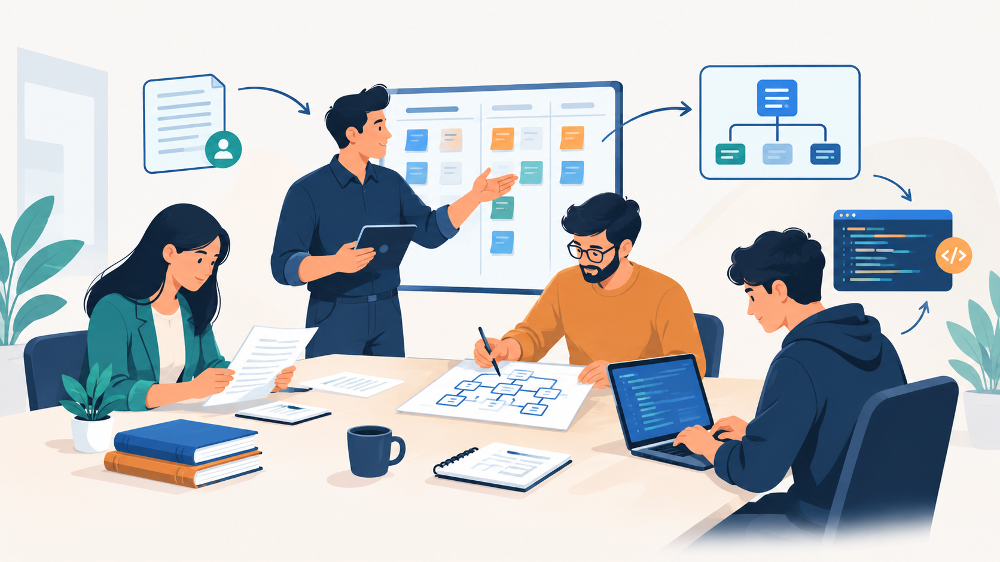
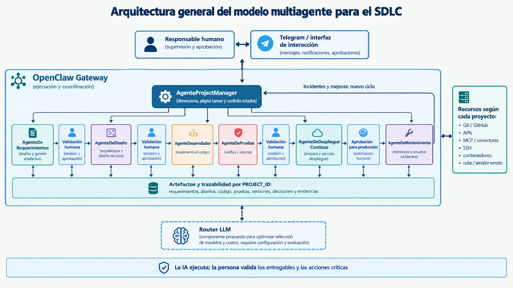
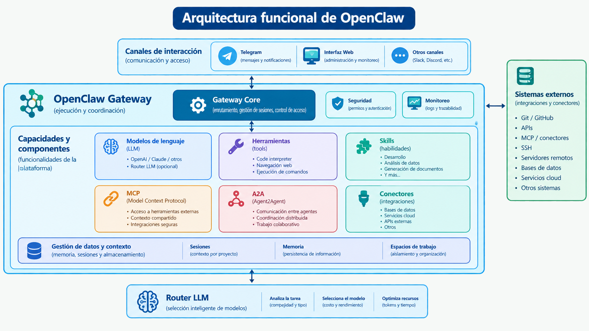
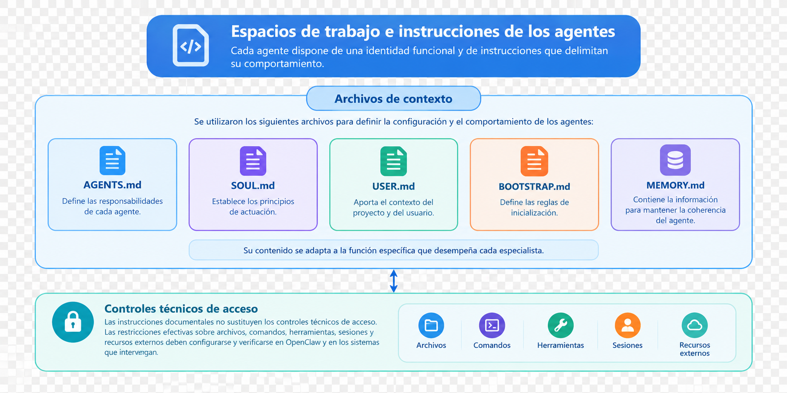
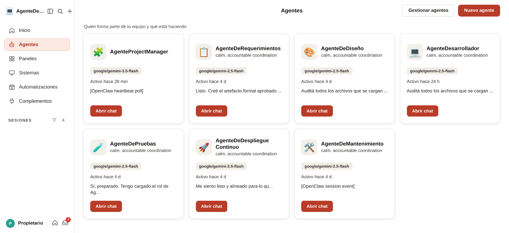

01 / MODELO TRADICIONAL
Fragmentado
Herramientas y tareas por separado
Cada etapa resuelve su parte, pero conectar los resultados depende en gran medida del equipo.

PROYECTO DE GRADO / 2026
Ingeniería de Software · Universidad de Cartagena
Diseño de un modelo que coordina agentes especializados y conserva la validación humana en las etapas críticas del proceso de desarrollo.
Automatizar tareas. Conectar etapas. Mantener supervisión.
01 · CONTEXTO
La IA ya puede apoyar partes del desarrollo. La dificultad aparece cuando los resultados quedan aislados y no existe una coordinación clara entre requerimientos, código, pruebas y revisión.
Cada etapa resuelve su parte, pero conectar los resultados depende en gran medida del equipo.

Un coordinador organiza el flujo y la persona valida los resultados antes de avanzar.
La propuesta no busca reemplazar al desarrollador: busca coordinar el trabajo de agentes especializados sin perder el control humano sobre las decisiones importantes.
IDEA CENTRAL DE LA INVESTIGACIÓN02 · PLANTEAMIENTO DEL PROBLEMA
El proyecto parte de herramientas que resuelven tareas puntuales, pero no siempre conectan de forma integral las distintas fases del SDLC.
¿Cómo diseñar, implementar y desplegar un modelo basado en agentes de Inteligencia Artificial que permita optimizar el proceso de desarrollo de software (SDLC) en el contexto colombiano, a través de la coordinación de agentes especializados y la incorporación de mecanismos de validación humana entre las distintas etapas del proceso?
MATRIZ DE CONSISTENCIA
Los problemas específicos se resumen a partir de las dimensiones y preguntas de investigación descritas en el documento.
¿Qué actividades del ciclo de vida del software pueden optimizarse mediante IA?
Identificar fundamentos y usos de agentes de IA en las fases del SDLC.
¿Qué plataformas y mecanismos permiten coordinar agentes y herramientas?
Analizar arquitecturas existentes y definir un mecanismo de comunicación y coordinación.
¿Qué tipos de agentes se necesitan y cómo se distribuyen las responsabilidades?
Definir roles especializados y su colaboración para apoyar el proceso de desarrollo.
¿Cómo conservar la validación humana entre las etapas automatizadas?
Incorporar puntos de revisión para aprobar resultados antes de continuar el flujo.
Nota para la versión final: esta matriz es una síntesis para sustentación; conviene contrastar su redacción con cualquier formato de matriz exigido por el programa.
03 · ANTECEDENTES
La revisión combina propuestas de IA aplicada al SDLC con trabajos sobre colaboración multiagente y aportes del contexto colombiano.
Examina usos de IA en diseño, desarrollo, revisión de código y despliegue; respalda la posibilidad de aplicar IA en varias fases del SDLC.
Distribuye programación, diseño de pruebas y ejecución de pruebas entre agentes; utiliza retroalimentación iterativa para corregir el código generado.
Propone roles especializados y procedimientos estructurados para dividir tareas complejas y coordinar agentes con resultados más coherentes.
Analiza el uso de IA en ingeniería de requerimientos y su potencial para apoyar actividades de esta fase, base para pensar en su integración con otras etapas.
Distribuye la captura y gestión de pedidos entre agentes con responsabilidades concretas; aporta un ejemplo nacional de coordinación multiagente en otro dominio.
El documento clasifica los trabajos como internacionales o nacionales; los países individuales de los estudios internacionales no se especifican en el texto consultado.
04 · BASES TEÓRICAS
Definiciones breves para presentar oralmente la base conceptual, sin convertir la sustentación en una lectura de texto.
Modelo capaz de interpretar y generar lenguaje a partir de instrucciones y contexto.
Proporciona capacidades de razonamiento y generación a los agentes.
Componente que interpreta un objetivo, planifica acciones y utiliza herramientas para ejecutarlas.
Permite delegar responsabilidades concretas en lugar de solicitar todo a un único sistema.
Conjunto de agentes especializados que colaboran e intercambian resultados.
Constituye la base del modelo: distribuir tareas y coordinar capacidades diferentes.
Ciclo de vida del desarrollo de software: desde los requerimientos hasta las pruebas, el despliegue y el mantenimiento.
Delimita las actividades que el modelo busca apoyar y conectar.
Organización y coordinación de tareas, dependencias y comunicación entre agentes.
Establece el orden de ejecución y el flujo de resultados entre las fases del proceso.
Enfoque que mantiene a una persona revisando o aprobando resultados en momentos definidos.
Ayuda a conservar la supervisión y la responsabilidad humana en decisiones críticas.
Secuencia organizada de tareas y dependencias para completar un proceso.
Permite definir qué se ejecuta, en qué orden y qué resultado necesita la siguiente etapa.
Generación aumentada por recuperación: consulta fuentes externas antes de generar una respuesta.
Puede ayudar a que un agente fundamente respuestas en documentación pertinente.
05 · METODOLOGÍA
El proceso combina selección y análisis de fuentes con observación directa de los artefactos del prototipo tecnológico.
Fuentes documentales y prototipo tecnológico.
Publicaciones científicas y fuentes técnicas sobre IA, agentes, orquestación y SDLC. Muestra principal: 22 artículos seleccionados de forma no probabilística e intencional.
Revisión documental y observación directa. Matriz de clasificación de fuentes, capturas de pantalla, artefactos del desarrollo y registro de casos de prueba.
OpenClaw, API de modelos de lenguaje, servidor VPS, Telegram, Git/GitHub, ClawCode y Visual Studio Code. Docker se contempla como alternativa por validar.
06 · RESULTADOS / SOLUCIÓN
Dos vistas complementarias: el modelo propuesto y la plataforma que lo ejecuta.




La primera imagen explica la solución propuesta; la segunda, la plataforma tecnológica que sirve como entorno de ejecución.
07 · DEMOSTRACIÓN DEL SISTEMA EN FUNCIONAMIENTO
Espacio preparado para insertar el video demostrativo completo del flujo multiagente cuando la URL definitiva esté disponible.
08 · CONCLUSIÓN
El cierre definitivo se redactará después de consolidar los resultados y la validación del prototipo.
El modelo propuesto busca integrar capacidades de Inteligencia Artificial a través de agentes especializados que colaboran bajo un flujo coordinado, con puntos de validación humana. La conclusión final deberá establecer qué objetivos se alcanzaron, qué evidencias aporta el prototipo y cuáles son sus limitaciones.